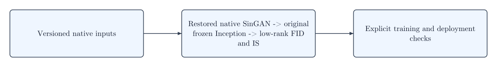
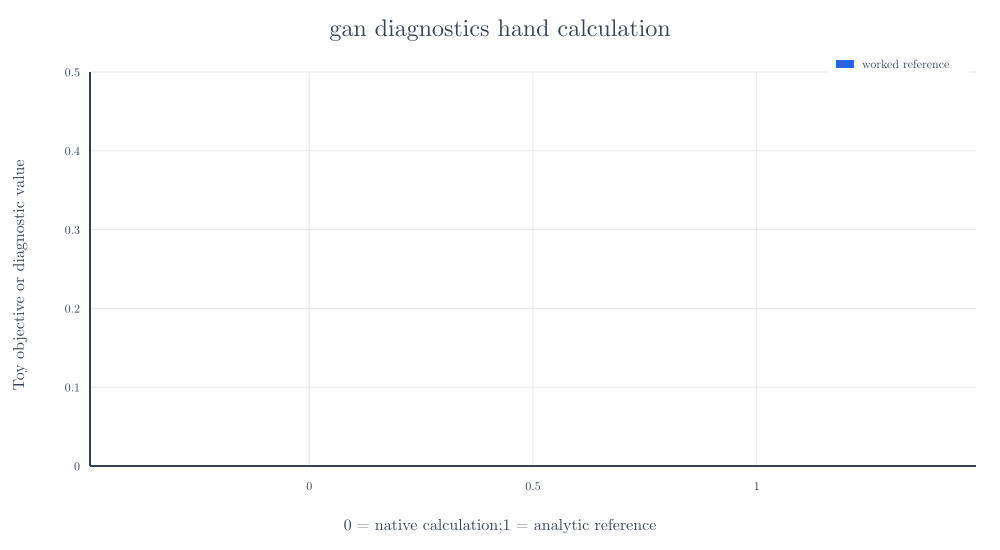
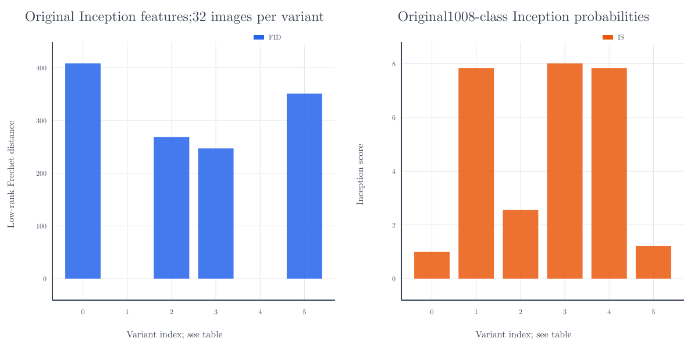
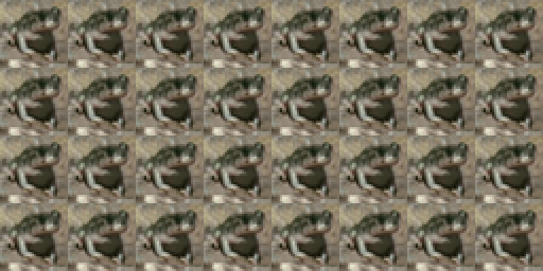
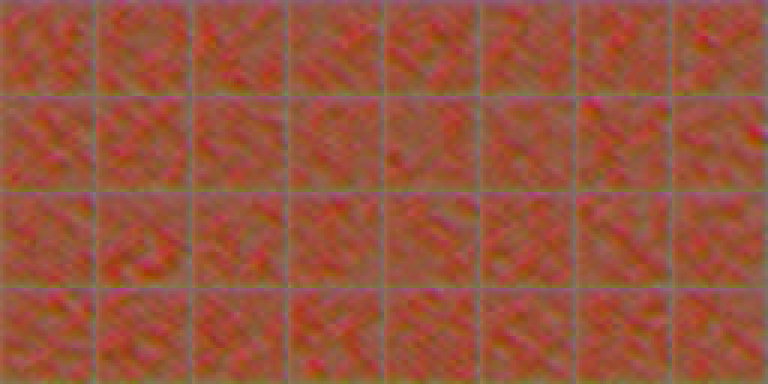

Gan Diagnostics
Abstract
Fréchet Inception Distance (FID) compares feature means and covariances. Inception Score (IS) compares each predicted class distribution with the pooled class distribution. The report measures both with the original frozen ImageNet Inception graph, using fixed CIFAR-10 controls and samples from a native SinGAN fit.
Provenance and scope
The reference pool uses CIFAR-10 test rows 64–95. The independent real pool uses training rows 128–159. The copy and collapse controls reuse images from the reference pool. The generated pool comes from the native SinGAN checkpoint and uses the reference example’s seed 8101. Each pool has 32 images, so the scores describe this fixed diagnostic experiment.
Follow the computation
Restored native SinGAN -> original frozen Inception -> low-rank FID and IS.
#include <dm/dm.hpp>
int main(){std::filesystem::create_directories("build");dm::graphics::Diagram d(29,1200);dm::graphics::DiagramNodeStyle s;s.width=14;s.height=5;s.font_size=23;d.node("data",{-18,0},"Versioned native inputs",s).node("model",{0,0},"Restored native SinGAN -> original frozen Inception -> low-rank FID and IS",s).node("audit",{18,0},"Explicit training and deployment checks",s).edge("data","model").edge("model","audit").save_svg("build/gan_diagnostics_method.svg");}
A calculation before fitting
Reversing the rows preserves sample mean and covariance, so Gaussian Frechet distance is zero. This is a hand-checkable copy control; zero distance alone does not prove learning or coverage.
#include <dm/dm.hpp>
int main(){namespace n=dm::nn;double computed=n::models::GaussianFrechet(n::tensor({-1.,0.,1.,0.},{2,2}),n::tensor({1.,0.,-1.,0.},{2,2})).fid.item(),analytic=0.;if(std::abs(computed-analytic)>2e-6)throw std::runtime_error("hand calculation differs from native primitives");std::print("| native calculation | analytic reference |\n|---:|---:|\n| {:.9f} | {:.9f} |\n",computed,analytic);dm::graphics::RPlot::create().bars(std::vector<double>{0,1},std::vector<double>{computed,analytic},"worked reference",{37,99,235}).ylim(0,std::max(.5,std::max(computed,analytic)*1.2)).x_label("0 = native calculation;1 = analytic reference").y_label("Toy objective or diagnostic value").title("gan diagnostics hand calculation").size(1000,550).save_svg("build/gan_diagnostics_worked.svg");}| native calculation | analytic reference |
|---|---|
| 0.000000000 | 0.000000000 |

Complete editable experiment
The program acquires the pinned Inception graph and CIFAR-10 inputs, restores or trains the three SinGAN scales, and scores the fixed pools. It caches extracted features so plotting and recomputing the metrics can reuse the inference results.
#include <dm/dm.hpp>
namespace recovered_singan {
namespace n = dm::nn;
namespace m = n::models;
using A = std::map<std::string, n::Tensor>;
using T = n::Tensor;
struct Scale {
n::ParameterStore g{7307}, d{7309};
std::unique_ptr<n::Optimizer> go, do_;
};
using Models = std::vector<std::unique_ptr<Scale>>;
const int sizes[3] = {16, 24, 32};
T Zero(int count, int h, int w) { return n::zeros({count, h, w, 3}); }
void Save(const std::filesystem::path& file, const A& a) {
n::NamedTensors values;
for (const auto& [key, value] : a) values.emplace_back(key, value);
n::save_npz(file.string(), values);
}
A Weights(const Scale& s) {
A out;
for (const auto& [prefix, store] :
std::vector<std::pair<std::string, const n::ParameterStore*>>{{"0/", &s.g}, {"1/", &s.d}})
for (const auto& name : store->names()) out.emplace(prefix + name, store->at(name).detach().clone());
return out;
}
bool Equal(const A& a, const A& b) {
if (a.size() != b.size()) return false;
for (const auto& [key, value] : a)
if (!b.count(key) || !n::equal_bits(value, b.at(key))) return false;
return true;
}
void Load(Scale& s, const A& values) {
for (const auto& [key, value] : values)
(key[0] == '0' ? s.g : s.d).set(key.substr(2), value.detach().clone());
}
A Forward(Scale& s, const A& b) {
auto o = m::SingleImageGan(s.g, s.d, b.at("image"), b.at("previous"), b.at("noise"),
b.at("rec_previous"), b.at("rec_noise"), b.at("amplitude"));
return {{"fake", o.fake}, {"reconstruction", o.reconstruction},
{"real_score", o.real_score}, {"fake_score", o.fake_score},
{"d_loss", o.d_loss}, {"g_loss", o.g_loss},
{"adversarial_loss", o.adversarial_loss}, {"reconstruction_loss", o.reconstruction_loss}};
}
A Partials(const n::ParameterStore& p, const std::vector<T>& gradient, int group) {
A out;
auto names = p.names();
for (std::size_t i = 0; i < names.size(); ++i)
out.emplace(std::to_string(group) + "/" + names[i], gradient[i]);
return out;
}
T Draw(Models& models, const std::vector<float>& amplitudes, const std::vector<T>& fixed,
int count, int rows, int seed, bool reconstruction = false, int height = 32,
int width = 32, A* capture = nullptr, int zero_scale = -1) {
n::NoGradGuard frozen;
T value = Zero(rows, height / 2, width / 2);
for (int k = 0; k < count; ++k) {
int h = k == 0 ? height / 2 : k == 1 ? height * 3 / 4 : height;
int w = k == 0 ? width / 2 : k == 1 ? width * 3 / 4 : width;
if (k) value = m::SRBicubic(value, h, w);
T z = reconstruction ? fixed[k] : m::SingleImageNoise(rows, h, w, k == 0, seed + 97 * k);
if (k == zero_scale) z = Zero(rows, h, w);
T previous = value;
value = m::SingleImageGenerate(models[k]->g, previous, z, n::full({1}, amplitudes[k])).image;
if (capture) {
auto prefix = "scale" + std::to_string(k) + "_";
capture->emplace(prefix + "noise", z);
capture->emplace(prefix + "previous", previous);
capture->emplace(prefix + "fake", value);
}
}
return value;
}
int Train() {
const std::filesystem::path root = "build/singan";
std::filesystem::create_directories(root);
const auto data = dm::datasets::fetch("cifar10");
const auto source = n::data::LoadCifar({std::filesystem::path(data) / "data_batch_1.bin"}, n::data::Cifar::k10);
const T image = 2.0 * m::SRPairs(source.images, {0}).hr - 1.0;
A pyramid{{"source", image}};
std::vector<T> targets, fixed;
for (int k = 0; k < 3; ++k) {
targets.push_back(k == 2 ? image : m::SRBicubic(image, sizes[k], sizes[k]));
fixed.push_back(k ? Zero(1, sizes[k], sizes[k]) : m::SingleImageNoise(1, 16, 16, true, 7411));
pyramid.emplace("target" + std::to_string(k), targets.back());
pyramid.emplace("fixed_noise" + std::to_string(k), fixed.back());
}
Save(root / "data.npz", pyramid);
Models models;
std::vector<float> amplitudes;
std::ofstream history(root / "history.tsv"), steps(root / "steps.tsv");
history.precision(17);
history << "scale\tepoch\td_loss\tg_loss\tadversarial_loss\treconstruction_loss\n";
steps << "scale\tepoch\tstep\tseed\n";
auto started = std::chrono::steady_clock::now();
for (int k = 0; k < 3; ++k) {
const auto dir = root / ("scale" + std::to_string(k));
std::filesystem::create_directories(dir / "phases");
std::vector<A> lower;
for (const auto& s : models) lower.push_back(Weights(*s));
T prev_rec = k ? m::SRBicubic(Draw(models, amplitudes, fixed, k, 1, 0, true), sizes[k], sizes[k])
: Zero(1, 16, 16);
amplitudes.push_back(k ? float(m::SingleImageAmplitude(targets[k], prev_rec).item()) : 1.f);
models.push_back(std::make_unique<Scale>());
auto& model = *models.back();
{
n::NoGradGuard init;
T zero = Zero(1, 4, 4);
m::SingleImageDiscriminate(model.d, m::SingleImageGenerate(model.g, zero, zero, n::ones({1})).image);
}
if (model.g.count() != 371 || model.d.count() != 297) throw std::runtime_error("scale census");
if (k) Load(model, Weights(*models[k - 1])); // BOTH groups warm-start; no optimizer state copied.
n::OptimizerConfig cfg;
cfg.kind = n::OptimizerKind::Adam;
cfg.beta1 = .5; cfg.beta2 = .999; cfg.epsilon = 1e-8;
model.go = std::make_unique<n::Optimizer>(model.g, .0005, cfg);
model.do_ = std::make_unique<n::Optimizer>(model.d, .0005, cfg);
auto counters = [&](const std::filesystem::path& file) {
Save(file, {{"iterations", n::from_vector(std::vector<std::int64_t>{model.go->iterations(), model.do_->iterations()}, {2})}});
};
auto all_stores = [&]() {
A out;
for (std::size_t i = 0; i < models.size(); ++i)
for (const auto& [key, value] : Weights(*models[i]))
out.emplace("scale" + std::to_string(i) + "/" + key, value);
return out;
};
Save(dir / "initial_arrays.npz", Weights(model));
counters(dir / "probe-initial-counters.npz");
Save(dir / "probe-setup.npz", {{"previous_reconstruction", prev_rec}, {"amplitude", n::full({1}, amplitudes[k])}});
A diagnostic;
for (int epoch = 1; epoch <= 3; ++epoch) {
for (int step = 0; step < 16; ++step) {
int global = (epoch - 1) * 16 + step, seed = 7501 + 10000 * k + 307 * global;
T previous = k ? m::SRBicubic(Draw(models, amplitudes, fixed, k, 1, seed), sizes[k], sizes[k])
: Zero(1, 16, 16);
A batch{{"image", targets[k]}, {"previous", previous},
{"noise", m::SingleImageNoise(1, sizes[k], sizes[k], k == 0, seed + 211)},
{"rec_previous", prev_rec}, {"rec_noise", fixed[k]},
{"amplitude", n::full({1}, amplitudes[k])}};
Save(dir / ("probe-batch" + std::to_string(global) + "-input.npz"), batch);
if (!global) {
diagnostic = batch;
Save(dir / "probe-first-forward.npz", Forward(model, batch));
auto out = Forward(model, batch);
Save(dir / "probe-stale-g-gradient.npz", Partials(model.g, n::grad(out.at("g_loss"), model.g.parameters()), 0));
}
for (int group : {1, 0}) {
auto& store = group ? model.d : model.g;
auto& opt = group ? model.do_ : model.go;
A before = Weights(model);
auto out = Forward(model, batch); // Fresh G capture AFTER the D write, same explicit batch.
auto gradient = n::grad(out.at(group ? "d_loss" : "g_loss"), store.parameters());
std::string name = "batch" + std::to_string(global) + (group ? "-d" : "-g");
Save(dir / "phases" / (name + "-gradient.npz"), Partials(store, gradient, group));
opt->step(gradient);
A after = Weights(model);
for (const auto& [key, value] : before)
if (key[0] != char('0' + group) && !n::equal_bits(value, after.at(key)))
throw std::runtime_error("unselected owner changed");
Save(dir / "phases" / (name + "-after.npz"), all_stores());
counters(dir / "phases" / (name + "-iterations.npz"));
}
steps << k << '\t' << epoch << '\t' << global << '\t' << seed << '\n';
}
Save(dir / ("probe-epoch" + std::to_string(epoch) + ".npz"), Weights(model));
A out;
{ n::NoGradGuard evaluation; out = Forward(model, diagnostic); }
Save(dir / ("probe-epoch" + std::to_string(epoch) + "-forward.npz"), out);
history << k << '\t' << epoch;
for (auto key : {"d_loss", "g_loss", "adversarial_loss", "reconstruction_loss"}) history << '\t' << out.at(key).item();
history << '\n';
}
Save(dir / "final.npz", Weights(model));
for (int group = 0; group < 2; ++group) {
auto& store = group ? model.d : model.g;
auto out = Forward(model, diagnostic);
Save(dir / ("final_gradients_group" + std::to_string(group) + ".npz"),
Partials(store, n::grad(out.at(group ? "d_loss" : "g_loss"), store.parameters()), group));
}
{ n::NoGradGuard evaluation; Save(dir / "outputs.npz", Forward(model, diagnostic)); }
for (int i = 0; i < k; ++i)
if (!Equal(lower[i], Weights(*models[i]))) throw std::runtime_error("lower scale changed");
auto restored = std::make_unique<Scale>();
A saved;
for (auto& [key, value] : n::load_npz((dir / "final.npz").string())) saved.emplace(key, value);
Load(*restored, saved);
if (!Equal(Weights(model), Weights(*restored))) throw std::runtime_error("checkpoint restore");
{ n::NoGradGuard check;
auto expected = m::SingleImageGenerate(model.g, diagnostic.at("previous"), diagnostic.at("noise"), diagnostic.at("amplitude")).image;
auto actual = m::SingleImageGenerate(restored->g, diagnostic.at("previous"), diagnostic.at("noise"), diagnostic.at("amplitude")).image;
if (!n::equal_bits(expected, actual)) throw std::runtime_error("restored generation"); }
models.back() = std::move(restored); // Frozen scale retains weights only, no optimizer.
}
double seconds = std::chrono::duration<double>(std::chrono::steady_clock::now() - started).count();
std::vector<A> before;
for (const auto& s : models) before.push_back(Weights(*s));
A outputs;
T samples = Draw(models, amplitudes, fixed, 3, 12, 7901, false, 32, 32, &outputs);
Save(root / "samples.npz", outputs); outputs.clear();
T rectangular = Draw(models, amplitudes, fixed, 3, 4, 7919, false, 40, 48, &outputs);
Save(root / "rectangular.npz", outputs); outputs.clear();
T reconstruction = Draw(models, amplitudes, fixed, 3, 1, 0, true, 32, 32, &outputs);
Save(root / "reconstruction.npz", outputs); outputs.clear();
for (int k = 0; k < 3; ++k) {
T control = Draw(models, amplitudes, fixed, 3, 12, 7901, false, 32, 32, nullptr, k);
outputs.emplace("zero_noise_scale" + std::to_string(k), control);
if (n::max(n::abs(control - samples)).item() <= 1e-7) throw std::runtime_error("inactive noise level");
if (!Equal(before[k], Weights(*models[k]))) throw std::runtime_error("inference wrote weights");
}
Save(root / "noise_controls.npz", outputs);
n::save_image_grid(samples, (root / "samples.png").string(), 4, -1, 1, 0, 220 / 255., 4);
n::save_image_grid(rectangular, (root / "rectangular.png").string(), 2, -1, 1, 0, 220 / 255., 3);
n::save_image_grid(n::concat({image, reconstruction}, 0), (root / "reconstruction.png").string(), 2, -1, 1, 0, 220 / 255., 6);
T s64 = n::cast(samples, n::DType::Float64);
double mse = n::mean(n::square(n::cast(reconstruction, n::DType::Float64) - n::cast(image, n::DType::Float64))).item();
double diversity = n::mean(n::square(s64 - n::mean(s64, {0}, true))).item();
Save(root / "amplitudes.npz", {{"amplitudes", n::from_vector(amplitudes, {3})}});
std::ofstream meta(root / "metrics.json"); meta.precision(17);
meta << "{\"epochs_per_scale\":3,\"scales\":3,\"parameters_per_scale\":668,\"steps_per_group_per_scale\":48,\"total_optimizer_updates\":288,\"amplitudes\":["
<< amplitudes[0] << ',' << amplitudes[1] << ',' << amplitudes[2]
<< "],\"training_image_reconstruction_mse\":" << mse << ",\"sample_pixel_variance\":" << diversity
<< ",\"heldout_accuracy\":false,\"selected_epoch_fixed_final\":3,\"training_seconds\":" << seconds << "}\n";
if (!meta || !history || !steps) throw std::runtime_error("incomplete records");
std::print("| Single-image result | Native value |\n|---|---|\n| Reconstruction MSE | {} |\n| Sample pixel variance | {} |\n| Scale amplitudes | {}, {}, {} |\n| Optimizer writes | 288 |\n| Held-out accuracy | Not measured |\n",
mse, diversity, amplitudes[0], amplitudes[1], amplitudes[2]);
return 0;
}
}
namespace recovered_metric_inputs {
void Prepare(const std::filesystem::path&root){
namespace n=dm::nn;namespace m=n::models;std::filesystem::create_directories(root);
auto graph_dir=dm::datasets::prepare_example_data("inception-metric");
if(std::filesystem::exists(root/"native-feature-provenance.json")&&std::filesystem::exists(root/"singan_inception.npz"))return;
if(!std::filesystem::exists("build/singan/scale2/final.npz")){int status=recovered_singan::Train();if(status)throw std::runtime_error("native SinGAN prerequisite failed");}
recovered_singan::Models models;
for(int k=0;k<3;++k){auto model=std::make_unique<recovered_singan::Scale>();recovered_singan::A arrays;for(auto&[key,value]:n::load_npz("build/singan/scale"+std::to_string(k)+"/final.npz"))arrays.emplace(key,value);recovered_singan::Load(*model,arrays);models.push_back(std::move(model));}
auto amplitudes=n::load_npz("build/singan/amplitudes.npz")[0].second.to_vector<float>();
auto raw=recovered_singan::Draw(models,amplitudes,{},3,32,8101);
auto generated=n::clip((raw+1.)*127.5,0,255);
auto data=dm::datasets::fetch("cifar10");auto train=n::load_cifar10(data,"train"),test=n::load_cifar10(data,"test");std::vector<std::int64_t>rows(32);std::iota(rows.begin(),rows.end(),64);auto reference=n::take_rows(test.images,rows)*255.;std::iota(rows.begin(),rows.end(),128);auto independent=n::take_rows(train.images,rows)*255.;
std::map<std::string,n::Tensor>images{{"real_reference",reference},{"independent_real",independent},{"singan",generated}};
n::save_npz((root/"images.npz").string(),{images.begin(),images.end()});
auto graph=n::FrozenGraph::load((std::filesystem::path(graph_dir)/"classify_image_graph_def.pb").string());
for(auto&[name,image]:images){std::vector<n::Tensor>features,probabilities;for(int row=0;row<32;++row){auto values=graph.evaluate({{"ExpandDims:0",n::take_rows(image,{row})}},{"pool_3:0","softmax:0"});features.push_back(n::reshape(values[0].second,{1,2048}));probabilities.push_back(n::reshape(values[1].second,{1,1008}));std::print("{} extractor row {} complete\n",name,row+1);}
n::save_npz((root/(name+"_inception.npz")).string(),{{"features",n::concat(features,0)},{"probabilities",n::concat(probabilities,0)}});}
std::ofstream(root/"native-feature-provenance.json")<<"{\"extractor\":\"original authenticated Inception2015 GraphDef\",\"runtime\":\"native FrozenGraph\",\"generator\":\"restored native three-scale SinGAN\",\"seed\":8101,\"external_TF_parity\":false}\n";
}
}
namespace recovered_checkpoints {
inline std::filesystem::path Model(const std::string&name){auto p=std::filesystem::path(dm::datasets::data_home())/"nn-completion-checkpoints/models"/name;std::filesystem::create_directories(p);return p;}
}
// CMD: just run-nn gan_diagnostics
// GAN diagnostics: FID / Inception score algebra, collapse/copy controls and
// small-sample caveats on 32-image CIFAR-10 variants.
//
// Extract pool3 features and 1008-way probabilities by executing the frozen
// ImageNet Inception GraphDef. The default feature directory caches these
// outputs from the two fixed real pools and the restored native SinGAN.
// An explicit features=DIR can supply previously recorded extractor outputs.
// All scores are recomputed in float64, including the split IS for four
// groups of eight images. Options: data=PATH features=PATH out=PATH.
// Editable workflow support: dataset_assets.hpp
namespace dataset_assets{inline std::string DataRoot(){return dm::datasets::data_home();}}
namespace dataset_assets {inline void EnsureSaliency(const std::string& directory){dm::datasets::prepare_example_data("mnist-assets",std::filesystem::path(directory).parent_path().string());}}
namespace dataset_assets {
inline dm::nn::ImageDataset LoadCifar10(const std::string&directory,const std::string&split){dm::datasets::fetch("cifar10",std::filesystem::path(directory).parent_path().string());return dm::nn::load_cifar10(directory,split);}
}
// Editable workflow support: gan.hpp
// Shared GAN example support: source-compatible Gaussian/data readers,
// named-array checkpoints, game diagnostics and remaining grouped model adapters.
// Completed DCGAN and Wasserstein maps now belong to the canonical core API;
// their report programs own every optimizer, constraint and fitting-loop call.
// Editable workflow support: checks.hpp
// Small runtime checks used by the executable nn examples. They stay on in
// Release builds and make the example exit nonzero on failure, so `just
// run-all-nn` doubles as a regression test against the recorded TF numbers.
// Editable workflow support: runtime.hpp
// Bounded demonstrations by default; opt into convergence experiments explicitly.
namespace example_runtime {
inline bool Full() {
const char* value = std::getenv("DATAMUNGE_EXAMPLES_FULL");
return value && std::string(value) == "1";
}
template <typename T> T Limit(T requested, T quick_limit) {
return Full() ? requested : std::min(requested, quick_limit);
}
inline void Describe() {
if (!Full())
std::cout << "Quick demonstration: bounded training; convergence metrics require "
"DATAMUNGE_EXAMPLES_FULL=1.\n";
}
} // namespace example_runtime
namespace check {
inline void Require(bool condition, const std::string& message) {
if (!condition) throw std::runtime_error(message);
}
// A short demonstration checks execution, derivatives and persistence; reaching
// a published accuracy/return requires the separately requested full schedule.
inline void TrainingQuality(bool condition, const std::string& message) {
if (example_runtime::Full()) Require(condition, message);
else std::cout << " full-training quality check deferred: " << message << '\n';
}
inline void Near(double actual, double expected, double tolerance, const std::string& message) {
if (!std::isfinite(actual) || !std::isfinite(expected) || std::abs(actual - expected) > tolerance)
throw std::runtime_error(message + ": got " + std::to_string(actual) + ", expected " + std::to_string(expected));
}
/// Expects `f` to throw; returns the message.
template <typename F>
std::string Throws(F&& f, const std::string& message) {
try {
f();
} catch (const std::exception& e) {
return e.what();
}
throw std::runtime_error(message + ": expected an exception");
}
} // namespace check
inline void Header(const std::string& title) {
const std::size_t pad = title.size() < 60 ? 60 - title.size() : 0;
std::cout << "\n== " << title << " " << std::string(pad, '=') << "\n";
}
namespace gan {
namespace nn = datamunge::nn;
using nn::Tensor;
using Arrays = std::map<std::string, Tensor>;
// ---- data and noise ------------------------------------------------------------------
/// tflow nn::GaussianNoise: Box-Muller pairs from std::mt19937(seed), float64 [count].
inline std::vector<double> GaussianNoise(std::int64_t count, std::uint32_t seed) {
std::vector<double> bank(static_cast<std::size_t>(count));
std::mt19937 rng(seed);
constexpr double tau = 6.283185307179586476925286766559;
for (std::int64_t i = 0; i < count; i += 2) {
const double u = (double(rng()) + .5) / 4294967296., v = (double(rng()) + .5) / 4294967296.;
const double radius = std::sqrt(-2 * std::log(u));
bank[i] = radius * std::cos(tau * v);
if (i + 1 < count) bank[i + 1] = radius * std::sin(tau * v);
}
return bank;
}
/// Float32 [n, d] standard normal rows (tflow GanGaussian / the WGAN Gaussian).
inline Tensor Gaussian(std::int64_t n, std::int64_t d, std::uint32_t seed) {
const auto bank = GaussianNoise(n * d, seed);
std::vector<float> values(bank.begin(), bank.end());
return nn::from_vector(values, {n, d});
}
/// One saliency/autoencoder MNIST pool: images [n, 28, 28, 1] in [0, 1].
struct DigitPool {
Tensor images, labels, source;
};
/// tflow ml::LoadSaliency: fit (1000), validation (200), test (200) balanced
/// MNIST pools from saliency_data.npz.
inline std::vector<DigitPool> LoadSaliency(const std::filesystem::path& root) {
const auto file = root / "saliency_data.npz";
dataset_assets::EnsureSaliency(root.string());
Arrays a;
for (auto& [name, t] : nn::load_npz(file.string())) a.emplace(name, t);
std::vector<DigitPool> result;
std::set<std::int64_t> ids;
for (const std::string split : {"fit", "validation", "test"}) {
const Tensor x = a.at(split + "_images");
const std::int64_t n = split == "fit" ? 1000 : 200;
check::Require(x.dtype() == nn::DType::Int32 && x.shape() == nn::Shape({n, 28, 28, 1}),
"source 28x28 grayscale digit images");
DigitPool d{nn::cast(x, nn::DType::Float32) / 255.0, a.at(split + "_labels"), a.at(split + "_source_ids")};
check::Require(d.labels.shape() == nn::Shape({n}) && d.source.shape() == nn::Shape({n}),
"aligned source/label vectors");
int counts[10] = {};
const auto labels = nn::cast(d.labels, nn::DType::Int64).to_vector<std::int64_t>();
const auto source = nn::cast(d.source, nn::DType::Int64).to_vector<std::int64_t>();
for (std::int64_t b = 0; b < n; ++b) {
check::Require(labels[b] >= 0 && labels[b] < 10 && ids.insert(source[b]).second, "source IDs disjoint, labels valid");
check::Require(split == "test" ? source[b] >= 60000 && source[b] < 70000 : source[b] >= 0 && source[b] < 60000,
"original test/train boundary");
++counts[labels[b]];
}
for (int c : counts) check::Require(c == n / 10, "balanced digit pools");
result.push_back(d);
}
return result;
}
inline Tensor Rows(const Tensor& x, const std::vector<std::int64_t>& rows) { return nn::take_rows(x, rows); }
inline std::vector<std::int64_t> Range(std::int64_t n) {
std::vector<std::int64_t> r(static_cast<std::size_t>(n));
for (std::int64_t i = 0; i < n; ++i) r[i] = i;
return r;
}
// ---- objectives and diagnostics --------------------------------------------------------
struct LogisticGanLoss {
Tensor discriminator, generator;
};
/// D: mean softplus(-real) + mean softplus(fake); non-saturating G: mean softplus(-fake).
inline LogisticGanLoss LogisticGanObjectives(const Tensor& real, const Tensor& fake) {
return {nn::mean(nn::softplus(-real)) + nn::mean(nn::softplus(fake)), nn::mean(nn::softplus(-fake))};
}
/// 4x4 averages of 7x7 pixel blocks divided by 4: [n, 784] -> [n, 16].
inline Tensor GanCoarsePixels(const Tensor& pixels) {
return nn::reshape(nn::avg_pool2d(nn::reshape(pixels, {-1, 28, 28, 1}), 7, 7), {-1, 16}) / 4.0;
}
/// Mean of inverse multiquadric kernels with c = 1, 4, 16.
inline Tensor ImqKernel(const Tensor& a, const Tensor& b) {
const Tensor d = nn::sum(nn::square(nn::expand_dims(a, 1) - nn::expand_dims(b, 0)), {2});
return (1.0 / (d + 1.0) + 4.0 / (d + 4.0) + 16.0 / (d + 16.0)) / 3.0;
}
/// Unbiased two-sample IMQ MMD^2 (diagonals excluded within each sample).
inline Tensor ImqMmd(const Tensor& x, const Tensor& y) {
const double n = double(x.size(0)), m = double(y.size(0));
check::Require(n >= 2 && m >= 2, "pixel MMD diagnostic needs >= 2 cases EACH");
const Tensor within_x = (nn::sum(ImqKernel(x, x)) - n) / (n * (n - 1));
const Tensor within_y = (nn::sum(ImqKernel(y, y)) - m) / (m * (m - 1));
return within_x + within_y - 2.0 * nn::mean(ImqKernel(x, y));
}
// ---- parameter groups ------------------------------------------------------------------
/// Copies of every array of `stores`, keyed "<prefix><name>".
inline Arrays Snapshot(const std::vector<std::pair<std::string, const nn::ParameterStore*>>& stores) {
Arrays out;
for (const auto& [prefix, store] : stores)
for (const auto& name : store->names()) out.emplace(prefix + name, store->at(name).detach().clone());
return out;
}
inline bool BitEqual(const Tensor& a, const Tensor& b) {
if (a.shape() != b.shape()) return false;
const auto x = a.contiguous().to_vector<float>(), y = b.contiguous().to_vector<float>();
return std::memcmp(x.data(), y.data(), x.size() * sizeof(float)) == 0;
}
inline bool BitEqual(const Arrays& a, const Arrays& b) {
if (a.size() != b.size()) return false;
for (const auto& [k, v] : a)
if (!b.count(k) || !BitEqual(v, b.at(k))) return false;
return true;
}
/// Overwrites existing parameters from an .npz written by tflow (or by Save):
/// every array must map to an existing parameter of the same shape.
inline void LoadArrays(const std::string& path, const std::vector<std::pair<std::string, nn::ParameterStore*>>& stores) {
std::size_t loaded = 0, expected = 0;
for (const auto& s : stores) expected += s.second->size();
for (const auto& [key, value] : nn::load_npz(path)) {
bool found = false;
for (const auto& [prefix, store] : stores)
if (key.rfind(prefix, 0) == 0 && store->contains(key.substr(prefix.size()))) {
const auto name = key.substr(prefix.size());
check::Require(store->at(name).shape() == value.shape(), "array shape matches parameter " + key);
store->set(name, nn::cast(value, store->dtype()));
found = true;
++loaded;
break;
}
check::Require(found, "unknown array " + key + " in " + path);
}
check::Require(loaded == expected, "every parameter restored from " + path);
}
inline void SaveArrays(const std::string& path, const Arrays& arrays) {
nn::NamedTensors named(arrays.begin(), arrays.end());
nn::save_npz(path, named);
}
inline void RequireFinite(const Arrays& fields, const std::string& message) {
for (const auto& [k, v] : fields)
for (float x : nn::cast(v, nn::DType::Float32).contiguous().to_vector<float>())
check::Require(std::isfinite(x), message + " (" + k + ")");
}
// ---- shared MLP and hinge pieces retained by InfoGAN, spectral and related models --------
/// tflow HingeGanObjectives: D mean relu(1 - real) + mean relu(1 + fake); G -mean fake
/// (ReLU subgradient 0 at the margin, as TF).
inline LogisticGanLoss HingeGanObjectives(const Tensor& real, const Tensor& fake) {
return {nn::mean(nn::relu(1.0 - real)) + nn::mean(nn::relu(1.0 + fake)), -nn::mean(fake)};
}
/// [n, 28, 28, 1] (or any [n, ...784]) -> [n, 784] (tflow UndercompleteModel::Flatten).
inline Tensor Flat784(const Tensor& x) { return nn::reshape(x, {-1, 784}); }
/// tflow MlpGanGenerate: z [n, 16] -> 32 tanh -> 784 sigmoid.
inline Tensor MlpGanGenerate(nn::ParameterStore& p, const Tensor& z) {
return nn::dense(p, "output", nn::dense(p, "hidden", z, 32, nn::Activation::Tanh), 784, nn::Activation::Sigmoid);
}
/// tflow MlpGanDiscriminate: image [n, 784] -> 32 tanh -> 1 raw score.
inline Tensor MlpGanDiscriminate(nn::ParameterStore& p, const Tensor& x) {
return nn::dense(p, "output", nn::dense(p, "hidden", x, 32, nn::Activation::Tanh), 1);
}
/// One-hot float32 [n, 10] of integer class IDs.
inline Tensor OneHot10(const Tensor& labels) { return nn::one_hot(nn::cast(labels, nn::DType::Int64), 10); }
/// tflow ConditionalGanModel::ValidateCondition: one int32 class 0..9 per 16-D noise row.
inline void ValidateCondition(const Tensor& z, const Tensor& labels, std::int64_t width = 16) {
check::Require(z.dtype() == nn::DType::Float32 && z.dim() == 2 && z.size(1) == width &&
labels.dtype() == nn::DType::Int32 && labels.shape() == nn::Shape({z.size(0)}),
"one valid integer class per " + std::to_string(width) + "-D noise vector");
for (auto c : labels.contiguous().to_vector<std::int32_t>()) check::Require(c >= 0 && c < 10, "class ID 0..9 before OneHot");
}
/// Separate parameter groups ("<k>/<name>" arrays) with one optimizer each, as
/// tflow's GAN models keep them: gradients of a group's objective w.r.t. that
/// group only, explicit Apply of (possibly pre-captured) gradients.
class GroupedGan {
public:
std::vector<std::unique_ptr<nn::ParameterStore>> groups;
std::vector<std::unique_ptr<nn::Optimizer>> optimizers;
explicit GroupedGan(const std::vector<std::uint64_t>& seeds) {
for (auto s : seeds) groups.push_back(std::make_unique<nn::ParameterStore>(s));
}
virtual ~GroupedGan() = default;
nn::ParameterStore& Group(int k) { return *groups.at(k); }
/// One Adam per group in `trainable` (default: all groups).
void MakeAdam(double lr, double beta1, double beta2 = .999, std::vector<int> trainable = {}) {
if (trainable.empty())
for (int k = 0; k < int(groups.size()); ++k) trainable.push_back(k);
optimizers.resize(groups.size());
for (int k : trainable) {
nn::OptimizerConfig c;
c.kind = nn::OptimizerKind::Adam;
c.beta1 = beta1;
c.beta2 = beta2;
optimizers[k] = std::make_unique<nn::Optimizer>(Group(k), lr, c);
}
}
/// d objective / d group k, keyed "<k>/<name>" (unused parameters get zeros).
Arrays GradientOf(int k, const Tensor& objective) {
auto& store = Group(k);
nn::GradOptions o;
o.allow_unused = true;
const auto g = nn::grad(objective, store.parameters(), o);
Arrays out;
for (std::size_t i = 0; i < g.size(); ++i)
out.emplace(std::to_string(k) + "/" + store.names()[i],
g[i].defined() ? g[i] : nn::zeros(store.at(store.names()[i]).shape(), store.dtype()));
return out;
}
/// One optimizer step of group k from gradients keyed "<k>/<name>".
void Apply(int k, const Arrays& gradients) {
std::vector<Tensor> ordered;
for (const auto& name : Group(k).names()) ordered.push_back(gradients.at(std::to_string(k) + "/" + name));
optimizers.at(k)->step(ordered);
}
std::vector<std::pair<std::string, nn::ParameterStore*>> Stores() {
std::vector<std::pair<std::string, nn::ParameterStore*>> s;
for (int k = 0; k < int(groups.size()); ++k) s.emplace_back(std::to_string(k) + "/", groups[k].get());
return s;
}
Arrays AllArrays() {
std::vector<std::pair<std::string, const nn::ParameterStore*>> s;
for (auto& [k, v] : Stores()) s.emplace_back(k, v);
return Snapshot(s);
}
void Save(const std::string& path) { SaveArrays(path, AllArrays()); }
void Load(const std::string& path) { LoadArrays(path, Stores()); }
std::int64_t Count(int k) { return Group(k).count(); }
};
/// tflow's Mosaic: 28x28 digits [n, 784] in [0, 1] at 3x with 4-pixel gray-220 gaps.
inline void Mosaic(const std::filesystem::path& path, const Tensor& images, std::int64_t columns) {
nn::save_image_grid(nn::reshape(images, {-1, 28, 28, 1}), path.string(), columns, 0, 1, 4, 220 / 255., 3);
}
/// The fit-pool mean image repeated n times, [n, 784] (tflow AutoencoderConstant(AutoencoderMean)).
inline Tensor FitMean(const Tensor& fit, std::int64_t n) {
return nn::tile(nn::mean(Flat784(fit), {0}, true), {n, 1});
}
/// Coarse-pixel MMD between real images and [n, 784] samples.
inline double CoarseMmd(const Tensor& real, const Tensor& fake) {
return ImqMmd(GanCoarsePixels(Flat784(real)), GanCoarsePixels(Flat784(fake))).item();
}
/// Mean generated pixel and mean per-pixel variance across samples of [n, d].
inline std::pair<double, double> PixelMoments(const Tensor& x) {
const Tensor mean = nn::mean(nn::cast(x, nn::DType::Float64), {0}, true);
return {nn::mean(mean).item(), nn::mean(nn::square(nn::cast(x, nn::DType::Float64) - mean)).item()};
}
/// Max |a - b| over all elements.
inline double MaxAbsDiff(const Tensor& a, const Tensor& b) {
return nn::max(nn::abs(nn::cast(a, nn::DType::Float64) - nn::cast(b, nn::DType::Float64))).item();
}
/// Checks that only arrays with one of `owners` prefixes changed between two
/// snapshots, and (if `require_change`) that at least one of them did.
inline void RequireOnlyOwnersChanged(const Arrays& before, const Arrays& after, const std::vector<std::string>& owners,
const std::string& message, bool require_change = true) {
bool changed = false;
for (const auto& [key, value] : before) {
bool own = false;
for (const auto& o : owners) own |= key.rfind(o, 0) == 0;
if (own)
changed |= !BitEqual(value, after.at(key));
else
check::Require(BitEqual(value, after.at(key)), message);
}
if (require_change) check::Require(changed, "intended GAN group updates");
}
} // namespace gan
// Editable workflow support: generative_metrics.hpp
// Evaluate the exact low-rank Gaussian Fréchet distance and the
// probability-space Inception Score from the saved features and probabilities.
namespace gan {
namespace gm_nn = datamunge::nn;
/// Every Frechet field of tflow's GaussianFrechet (float64 scalars + the
/// singular values of the [n_a, n_b] cross matrix).
inline std::map<std::string, gm_nn::Tensor> Frechet(const gm_nn::Tensor& x, const gm_nn::Tensor& y) {
namespace nn = gm_nn;
check::Require(x.dim() == 2 && y.dim() == 2 && x.size(0) > 1 && y.size(0) > 1 && x.size(1) == y.size(1),
"FID requires at least two examples and equal feature width");
const nn::Tensor a = nn::cast(x, nn::DType::Float64), b = nn::cast(y, nn::DType::Float64);
for (const auto* t : {&a, &b})
for (double v : t->contiguous().to_vector<double>()) check::Require(std::isfinite(v), "finite metric input");
const nn::Tensor am = nn::mean(a, {0}), bm = nn::mean(b, {0});
const nn::Tensor av = (a - am) / std::sqrt(double(a.size(0) - 1)), bv = (b - bm) / std::sqrt(double(b.size(0) - 1));
const auto svd = nn::svd(nn::matmul(av, bv, false, true), false);
const nn::Tensor mt = nn::sum(nn::square(am - bm)), ta = nn::sum(nn::square(av)), tb = nn::sum(nn::square(bv)),
ct = nn::sum(svd.s);
const nn::Tensor raw = mt + (ta + tb) - 2.0 * ct;
check::Require(raw.item() >= -1e-7, "only round-off negative FID may clamp");
return {{"fid", nn::maximum(raw, nn::scalar_like(0.0, raw))},
{"raw_fid", raw},
{"mean_term", mt},
{"trace_a", ta},
{"trace_b", tb},
{"cross_trace", ct},
{"cross_singular_values", svd.s}};
}
/// exp(mean_i KL(p(y|x_i) || p(y))) from row-normalized class probabilities.
inline double InceptionScore(const gm_nn::Tensor& probability) {
namespace nn = gm_nn;
check::Require(probability.dim() == 2 && probability.size(0) > 0 && probability.size(1) > 1,
"nonempty class probability matrix");
const nn::Tensor p = nn::cast(probability, nn::DType::Float64);
const auto v = p.contiguous().to_vector<double>();
const auto cols = p.size(1);
for (std::int64_t i = 0; i < p.size(0); ++i) {
double sum = 0;
for (std::int64_t j = 0; j < cols; ++j) {
const double x = v[i * cols + j];
check::Require(std::isfinite(x), "finite metric input");
check::Require(x >= 0 && x <= 1, "probability not logits");
sum += x;
}
check::Near(sum, 1, 3e-6, "row-normalized probabilities");
}
const nn::Tensor marginal = nn::mean(p, {0});
const nn::Tensor logp = nn::log(nn::maximum(p, nn::scalar_like(1e-300, p)));
const nn::Tensor logm = nn::log(nn::maximum(marginal, nn::scalar_like(1e-300, marginal)));
return std::exp(nn::mean(nn::sum(p * (logp - logm), {1})).item());
}
} // namespace gan
// Editable workflow support: paths.hpp
// Where the nn example ports read datasets and write their outputs.
//
// Datasets: $DATAMUNGE_DATA_DIR, or the user's cache. Public datasets are
// prepared by the example data loaders when first needed.
// Outputs (checkpoints, histories, fixtures): $DATAMUNGE_OUTPUT_DIR, or
// output/nn relative to the working directory (`just run-nn` runs from the
// repository root). Both are created on demand by the caller.
namespace paths {
inline std::filesystem::path DataRoot() {
return dataset_assets::DataRoot();
}
/// DataRoot() / name, e.g. Dataset("mnist").
inline std::filesystem::path Dataset(const std::string& name) { if(name=="cifar10"||name=="character_rnn")return DataRoot()/name;return std::filesystem::path(dm::datasets::prepare_example_data("nn-completion-assets"))/name; }
inline std::filesystem::path OutputRoot(){return std::filesystem::absolute("build/nn-completion");}
/// OutputRoot() / relative, created as a directory.
inline std::filesystem::path OutputDir(const std::string& relative) {
auto dir = OutputRoot() / relative;
std::filesystem::create_directories(dir);
return dir;
}
} // namespace paths
namespace nn = datamunge::nn;
using nn::Tensor;
namespace {
Tensor Rows(const Tensor& x, const std::vector<std::int64_t>& rows) { return nn::take_rows(x, rows); }
/// tflow Pixels: [0, 1] -> clamp(v * 255, 0, 255).
Tensor Pixels(const Tensor& x) {
auto v = x.contiguous().to_vector<float>();
for (auto& p : v) p = float(std::clamp(double(p) * 255., 0., 255.));
return nn::from_vector(v, x.shape());
}
double Scalar(const std::map<std::string, Tensor>& m, const std::string& key) { return m.at(key).item(); }
void Algebra(const std::filesystem::path& root) {
const auto f64 = nn::DType::Float64;
const double r2 = std::sqrt(2.);
const Tensor a = nn::tensor({-1, -1, -1, 1, 1, -1, 1, 1}, {4, 2}, f64);
const Tensor b = nn::tensor({r2, 0, -r2, 0, 0, r2, 0, -r2}, {4, 2}, f64);
const Tensor unequal = nn::tensor({0, 0, 1, 2, -1, 3, 2, 1, -2, -1}, {5, 2}, f64);
std::vector<double> onehot(16, 0.), collapsed(16, 0.), uniform(16, .25);
for (int i = 0; i < 4; ++i) onehot[i * 4 + i] = 1, collapsed[i * 4] = 1;
const Tensor oh = nn::from_vector(onehot, {4, 4}), co = nn::from_vector(collapsed, {4, 4}), un = nn::from_vector(uniform, {4, 4});
check::Near(gan::InceptionScore(oh), 4, 1e-12, "balanced confident IS classes");
check::Near(gan::InceptionScore(un), 1, 1e-12, "uniform conditional IS 1");
check::Near(gan::InceptionScore(co), 1, 1e-12, "collapsed class IS 1");
check::Near(Scalar(gan::Frechet(a, b), "fid"), 0, 1e-12,
"FID cannot distinguish different distributions with same mean and covariance");
const auto unequal_score = gan::Frechet(a, unequal);
check::Near(Scalar(unequal_score, "fid"), Scalar(gan::Frechet(unequal, a), "fid"), 1e-12, "Frechet symmetric unequal N");
gan::Arrays fixture{{"a", a}, {"b_same_moments", b}, {"unequal", unequal}, {"onehot", oh}, {"uniform", un}, {"collapsed", co}};
for (const auto& [k, v] : unequal_score) fixture.emplace("unequal_" + k, v);
gan::SaveArrays((root / "algebra.npz").string(), fixture);
bool rejected = false;
try {
gan::InceptionScore(nn::tensor({.5, .8}, {1, 2}, f64));
} catch (const std::exception&) {
rejected = true;
}
check::Require(rejected, "reject non-normalized probabilities");
rejected = false;
try {
gan::Frechet(nn::zeros({1, 2}, f64), a);
} catch (const std::exception&) {
rejected = true;
}
check::Require(rejected, "reject undefined N=1 sample covariance");
std::cout << "metric algebra: IS(one-hot)=4, IS(uniform)=IS(collapsed)=1, FID(same moments)=0, unequal-N FID="
<< Scalar(unequal_score, "fid") << " (symmetric) PASS\n";
}
gan::Arrays LoadNpz(const std::filesystem::path& path) {
check::Require(std::filesystem::exists(path), path.string() +
" missing: run tflow's gan_diagnostics (needs its Inception assets "
"and SinGAN) or pass features=DIR");
gan::Arrays out;
for (auto& [k, v] : nn::load_npz(path.string())) out.emplace(k, v);
return out;
}
void Run(const std::filesystem::path& data, const std::filesystem::path& recorded, const std::filesystem::path& root) {
std::filesystem::create_directories(root);
Algebra(root);
const auto test = dataset_assets::LoadCifar10(data.string(), "test"), train = dataset_assets::LoadCifar10(data.string(), "train");
std::vector<std::int64_t> rows;
for (int i = 64; i < 96; ++i) rows.push_back(i);
const Tensor ref = Pixels(Rows(test.images, rows));
rows.clear();
for (int i = 128; i < 160; ++i) rows.push_back(i);
const Tensor independent = Pixels(Rows(train.images, rows));
const auto tf_images = LoadNpz(recorded / "images.npz");
check::Require(gan::BitEqual(ref, tf_images.at("real_reference")) && gan::BitEqual(independent, tf_images.at("independent_real")),
"CIFAR reference/independent images equal native extractor inputs BIT EXACT");
const Tensor singan = tf_images.at("singan");
check::Require(singan.shape() == nn::Shape({32, 32, 32, 3}), "recorded SinGAN chain output 32 x 32x32 RGB");
std::vector<std::int64_t> reverse, collapse, limited;
for (int i = 0; i < 32; ++i) reverse.push_back(31 - i), collapse.push_back(0), limited.push_back(i % 4);
const gan::Arrays images{{"real_reference", ref},
{"independent_real", independent},
{"singan", singan},
{"collapsed_real", Rows(ref, collapse)},
{"four_repeated_real", Rows(ref, limited)},
{"copied_heldout", Rows(ref, reverse)}};
gan::SaveArrays((root / "images.npz").string(), images);
std::map<std::string, gan::Arrays> fields;
for (std::string name : {"real_reference", "independent_real", "singan"}) {
fields[name] = LoadNpz(recorded / (name + "_inception.npz"));
check::Require(fields[name].at("features").shape() == nn::Shape({32, 2048}) &&
fields[name].at("probabilities").shape() == nn::Shape({32, 1008}),
"full Inception features and 1008 class probabilities");
gan::RequireFinite(fields[name], "finite frozen features/probabilities/logits");
}
for (const auto& [name, index] : std::vector<std::pair<std::string, std::vector<std::int64_t>>>{
{"collapsed_real", collapse}, {"four_repeated_real", limited}, {"copied_heldout", reverse}})
for (const auto& [key, value] : fields.at("real_reference")) fields[name].emplace(key, Rows(value, index));
std::ofstream table(root / "scores.tsv"), json(root / "metrics.json");
table.precision(17);
json.precision(17);
table << "variant\tfid\tinception_score\tsplit_mean\tsplit_population_std\texact_unique_images\ttflow_fid\n";
json << "{\"samples_per_variant\":32,\"feature_dimension\":2048,\"classes\":1008,\"split_count\":4,\"split_size\":8,"
"\"train_new_epochs\":0,\"features_from_tflow_record\":false,\"results\":{";
bool comma = false;
double worst_fid_diff = 0;int external_compared=0;
for (const auto& [name, rgb] : images) {
const auto& f = fields.at(name);
const auto score = gan::Frechet(fields.at("real_reference").at("features"), f.at("features"));
gan::SaveArrays((root / (name + "_frechet.npz")).string(), {score.begin(), score.end()});
const double is = gan::InceptionScore(f.at("probabilities"));
double mean = 0, var = 0;
std::vector<double> split;
for (int k = 0; k < 4; ++k) {
std::vector<std::int64_t> indices;
for (int j = 0; j < 8; ++j) indices.push_back(k * 8 + j);
split.push_back(gan::InceptionScore(Rows(f.at("probabilities"), indices)));
mean += split.back() / 4;
}
for (auto x : split) var += (x - mean) * (x - mean) / 4;
std::set<std::vector<float>> unique;
const auto pixels = rgb.contiguous().to_vector<float>();
for (int i = 0; i < 32; ++i) unique.emplace(pixels.begin() + i * 3072, pixels.begin() + (i + 1) * 3072);
const double fid = Scalar(score, "fid");
const bool has_external=std::filesystem::exists(recorded/(name+"_frechet.npz"));
const double tf_fid=has_external?LoadNpz(recorded/(name+"_frechet.npz")).at("fid").item():std::numeric_limits<double>::quiet_NaN();
if(has_external){++external_compared;worst_fid_diff = std::max(worst_fid_diff, std::abs(fid - tf_fid) / std::max(1., std::abs(tf_fid)));}
table << name << '\t' << fid << '\t' << is << '\t' << mean << '\t' << std::sqrt(var) << '\t' << unique.size() << '\t'
<< tf_fid << '\n';
if (comma) json << ',';
comma = true;
json << '"' << name << "\":{\"fid\":" << fid << ",\"inception_score\":" << is << ",\"split_mean\":" << mean
<< ",\"split_population_std\":" << std::sqrt(var) << ",\"unique_images\":" << unique.size()
<< ",\"tflow_fid\":";
if (has_external) json << tf_fid;
else json << "null";
json << '}';
if (name == "collapsed_real") check::Near(is, 1, 3e-6, "one image collapse IS 1");
if (name == "copied_heldout" || name == "real_reference") check::Near(fid, 0, 1e-7, "held-out copy can obtain FID 0 without learning");
nn::save_image_grid(rgb, (root / (name + ".png")).string(), 8, 0, 255, 0, 220, 3);
std::cout << name << ": FID=" << fid << " (tflow " << tf_fid << "), IS=" << is << ", exact unique=" << unique.size()
<< std::endl;
}
check::Require(worst_fid_diff < 1e-6, "available external FID comparisons match");
json << "},\"external_tf_compared\":"<<external_compared<<",\"max_relative_fid_difference_vs_tflow\":" << (external_compared?std::to_string(worst_fid_diff):"null") << "}\n";
check::Require(bool(json) && bool(table), "complete GAN metric reports");
std::cout << "FID/IS/low rank/unequal N/same moments/collapse/copy PASS (Inception features: authenticated original GraphDef, native execution; max relative "
"FID difference vs tflow "
<< (external_compared?std::to_string(worst_fid_diff):"unavailable") << ")\nArtifacts: " << root.string() << "\nAll gan_diagnostics checks passed.\n";
}
} // namespace
int main(int argc, char** argv) {
try {
std::filesystem::path data = paths::Dataset("cifar10"), out = paths::OutputRoot() / "models" / "gan_diagnostics";
std::filesystem::path recorded = std::filesystem::absolute("build/native-gan-inputs-seed8101");
recovered_metric_inputs::Prepare(recorded);
for (int i = 1; i < argc; ++i) {
const std::string a = argv[i];
if (a.rfind("data=", 0) == 0)
data = a.substr(5);
else if (a.rfind("features=", 0) == 0)
recorded = a.substr(9);
else if (a.rfind("out=", 0) == 0)
out = a.substr(4);
else
throw std::invalid_argument("expected data=PATH features=PATH out=PATH");
}
Run(data, recorded, out);
return 0;
} catch (const std::exception& e) {
std::cerr << e.what() << '\n';
return 1;
}
}
metric algebra: IS(one-hot)=4, IS(uniform)=IS(collapsed)=1, FID(same moments)=0, unequal-N FID=1.44828 (symmetric) PASS collapsed_real: FID=408.431 (tflow nan), IS=1, exact unique=1 copied_heldout: FID=0 (tflow nan), IS=7.836, exact unique=32 four_repeated_real: FID=268.584 (tflow nan), IS=2.55718, exact unique=4 independent_real: FID=247.067 (tflow nan), IS=8.01122, exact unique=32 real_reference: FID=0 (tflow nan), IS=7.836, exact unique=32 singan: FID=351.225 (tflow nan), IS=1.21389, exact unique=32 FID/IS/low rank/unequal N/same moments/collapse/copy PASS (Inception features: authenticated original GraphDef, native execution; max relative FID difference vs tflow unavailable) Artifacts: /mnt/projects/datamunge/docs/mepml/nn/3_generative_models/3.1_gans/build/nn-completion/models/gan_diagnostics All gan_diagnostics checks passed.
Inspect the actual saved results
The real-image controls reproduce the reference scores. The native SinGAN run yields FID 351.225 and IS 1.214. The upstream TensorFlow report records 380.048 and 1.259 for its SinGAN checkpoint. The two runs fit their checkpoints independently. The native score pair is specific to this run.
Actual frozen-extractor metrics
All variants use the same original extractor and fixed32-image pools. FID zero for a held-out copy is a diagnostic of metric limitations; small-sample FID is biased, and ImageNet IS is not CIFAR class accuracy.
| Variant | FID | Inception score |
|---|
#include <dm/dm.hpp>
int main(){std::ifstream in("build/nn-completion/models/gan_diagnostics/scores.tsv");std::string line;std::getline(in,line);std::vector<double>x,fid,is;std::vector<std::string>names;while(std::getline(in,line)){std::istringstream row(line);std::string name;double f,s;if(row>>name>>f>>s){x.push_back(x.size());names.push_back(name);fid.push_back(f);is.push_back(s);std::print("| {} | {:.6f} | {:.6f} |\n",name,f,s);}}if(x.size()!=6)throw std::runtime_error("six actual GAN variants required");auto layout=dm::graphics::RLayout::create(1,2);auto a=dm::graphics::RPlot::create();a.bars(x,fid,"FID",{37,99,235}).title("Original Inception features;32 images per variant").x_label("Variant index; see table").y_label("Low-rank Frechet distance");auto c=dm::graphics::RPlot::create();c.bars(x,is,"IS",{234,88,12}).title("Original1008-class Inception probabilities").x_label("Variant index; see table").y_label("Inception score");layout.add(a).add(c).size(1200,600).fit_panels().save_svg("build/gan_diagnostics_scores.svg");}| collapsed_real | 408.431436 | 1.000000 |
| copied_heldout | 0.000000 | 7.836003 |
| four_repeated_real | 268.584404 | 2.557182 |
| independent_real | 247.067053 | 8.011223 |
| real_reference | 0.000000 | 7.836003 |
| singan | 351.224596 | 1.213885 |

Inspect actual collapsed real pixels
The raw saved rendering uses the original fixed0..255 scaling and32-image comparison pool.
#include <dm/dm.hpp>
int main(){std::filesystem::copy_file("build/nn-completion/models/gan_diagnostics/collapsed_real.png","build/gan_diagnostics_collapsed_real.png",std::filesystem::copy_options::overwrite_existing);}
Inspect actual copied heldout pixels
The raw saved rendering uses the original fixed0..255 scaling and32-image comparison pool.
#include <dm/dm.hpp>
int main(){std::filesystem::copy_file("build/nn-completion/models/gan_diagnostics/copied_heldout.png","build/gan_diagnostics_copied_heldout.png",std::filesystem::copy_options::overwrite_existing);}Inspect actual four repeated real pixels
The raw saved rendering uses the original fixed0..255 scaling and32-image comparison pool.
#include <dm/dm.hpp>
int main(){std::filesystem::copy_file("build/nn-completion/models/gan_diagnostics/four_repeated_real.png","build/gan_diagnostics_four_repeated_real.png",std::filesystem::copy_options::overwrite_existing);}Inspect actual independent real pixels
The raw saved rendering uses the original fixed0..255 scaling and32-image comparison pool.
#include <dm/dm.hpp>
int main(){std::filesystem::copy_file("build/nn-completion/models/gan_diagnostics/independent_real.png","build/gan_diagnostics_independent_real.png",std::filesystem::copy_options::overwrite_existing);}Inspect actual real reference pixels
The raw saved rendering uses the original fixed0..255 scaling and32-image comparison pool.
#include <dm/dm.hpp>
int main(){std::filesystem::copy_file("build/nn-completion/models/gan_diagnostics/real_reference.png","build/gan_diagnostics_real_reference.png",std::filesystem::copy_options::overwrite_existing);}Inspect actual singan pixels
The raw saved rendering uses the original fixed0..255 scaling and32-image comparison pool.
#include <dm/dm.hpp>
int main(){std::filesystem::copy_file("build/nn-completion/models/gan_diagnostics/singan.png","build/gan_diagnostics_singan.png",std::filesystem::copy_options::overwrite_existing);}